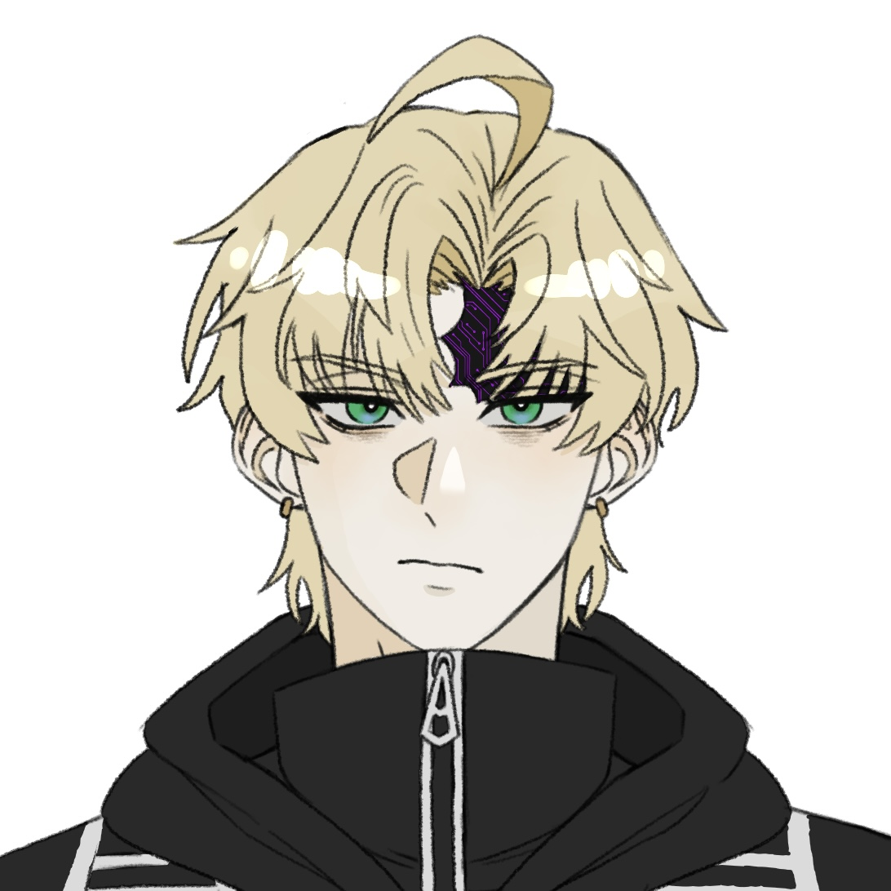

3.1 — Hedonist
순간의 재미와 자극을 좇는 쾌락주의자
골치 아픈 대의명분이나 사명감보다는 '지금 당장 내 흥미를 끄는가'와 '재미있는가'가 행동의 제1원칙이다. 엄숙한 상황에서도 실없는 농담을 던져 긴장을 깨뜨리거나 피식 웃어넘기며, 고통스럽거나 지루한 현실을 회피하기 위해 자극적인 유희거리를 찾아다닌다.
[WARN] photosensitivity & audio
이 페이지에는 깜빡이는 빛, 색이 반전되며 화면이 흔들리는 효과(특수능력 섹션의 KERNEL PANIC 버튼), 글리치와 노이즈처럼 빠르게 움직이는 그래픽이 포함되어 있습니다. 광과민성 뇌전증이 있거나 빛과 움직임에 민감하다면 주의해 주세요. 보는 도중 어지럽거나 불편하면 바로 창을 닫아 주세요.
> audio_output: enabled
이 페이지에는 배경 음악이 나옵니다. 들어가기 전에 기기의 소리를 줄여 주세요. 소리 없이 보고 싶다면 ‘소리 끄고 보기’를 누르세요. 들어간 뒤에도 오른쪽 위 SOUND 버튼으로 언제든 켜고 끌 수 있습니다.
> 이 페이지 곳곳에 능력의 흔적이 숨어 있습니다. 찾아보세요.
웹사이트 대신 같은 내용을 문서로 볼 수 있습니다.
구글 독스로 본문 보기 ↗Дмитрий Дмитриевич Шостакович

[ 버그 없는 코드는 없습니다. ]
“보안 패치 좀 하라고 석 달 전부터 말씀드렸을 텐데요. 덕분에 오늘 제 커피가 세 잔째입니다.”

(Faction) — Grand Harmony Directorate
SAPIENTIA
사피엔티아
소속 진영 · Applicant No. 026
드미트리 드미트리예비치
쇼스타코비치
callsign → 드미트리
Faction
SAPIENTIA
사피엔티아
| 1.1 | Name | 드미트리 드미트리예비치 쇼스타코비치 |
|---|---|---|
| 1.2 | Sex | 남성 |
| 1.3 | Age | 26 |
| 1.4 | Height / Weight | 168 cm / 65 kg |
| 1.5 | Faction | 사피엔티아 |
| 1.6 | Birthday | 5월 9일 |
| 1.7 | Blood | A형 |
| 1.8 | Origin | 구 러시아 연방 지역 출신 (재건 후 Concordia 대륙 거주) |
정리되지 않아 이마와 귀를 덮은 헝클어진 베이지색 머리칼 사이로 날카롭고 서구적인 이목구비가 드러난다. 늘 어둠속에 살아서 핏기 없이 창백한 피부톤을 띠고 있으며, 선명한 에메랄드빛 녹안 아래로는 짙은 다크서클이 내려앉아 피로감이 묻어난다. 얼굴 오른쪽 상단, 이마 관자놀이 부근에서 헤어라인 안쪽까지 굵게 긁힌 검은색 흉터가 남아 있다. 168cm의 왜소한 체격에 오랜 실내 작업과 컴퓨터 사용으로 인한 만성적인 거북목 때문에 실제보다 키가 더 작아 보이며, 어깨를 살짝 움츠린 자세가 굳어져 있다.
쾌락주의 / 장난끼 많은 / 팔랑귀
3.1 — Hedonist
골치 아픈 대의명분이나 사명감보다는 '지금 당장 내 흥미를 끄는가'와 '재미있는가'가 행동의 제1원칙이다. 엄숙한 상황에서도 실없는 농담을 던져 긴장을 깨뜨리거나 피식 웃어넘기며, 고통스럽거나 지루한 현실을 회피하기 위해 자극적인 유희거리를 찾아다닌다.
3.2 — Prankster
상대를 얕보거나 골탕 먹이려는 악의는 없지만, 남의 반응을 관찰하는 것을 즐겨 짓궂은 장난을 치거나 일부러 말꼬투리를 잡으며 깐족거린다. 타인의 사소한 허점이나 시스템의 취약점을 보면 그냥 지나치지 못하고 툭툭 건드려보는 악동 기질이 다분하다.
3.3 — Pushover
매사에 시니컬하고 툴툴거리면서도, 상대가 그럴듯한 데이터와 완벽한 인과관계로 설득해 오면 "…듣고 보니 또 맞네?" 하고 어이없을 만큼 쉽게 수긍해버린다. 특히 '비싼 장비 지원'이나 '금전적 보상'이 걸려 있는 제안에는 겉으로 투덜대면서도 순식간에 마음을 돌려버리는 탓에 종종 주변 사람들에게 이용당하거나 말려들기 십상이다.
L
4.1 — Like
H
4.2 — Hate
S
4.3 — Scare
5.0 — Total HP
총체력
290
기본 체력 200+추가 체력 90
// total HP 290 = base 200 + bonus 90 · allocated 320 · build: TANK / SUPPORT · low ATK, low ACC by design
가상현실 장갑을 조작해 전면에 압축된 홀로그램 형태의 육각형 데이터 장벽을 전개한다. 정면에서 날아오는 물리적·에너지 투사체 궤적을 왜곡시켜 시전자 및 바로 뒤 아군을 보호한다.
지면의 접점 좌표에 순간적인 데이터 과부하 신호를 주입해 바닥을 강하게 파열시킨다. 솟구치는 파편과 정전기 충격으로 전방의 적에게 충격을 주며 자세를 무너뜨린다.
휴대 단말의 잉여 연산 데이터를 불안정한 파편 형태로 뭉쳐 전방으로 비산시킨다. 정확도는 떨어지지만 다량의 네온빛 데이터 파편이 산탄처럼 퍼져 적의 접근을 차단하고 찰과상을 입힌다.
가상현실 장갑의 전도성 패널에 순간적으로 고전압 펄스를 모아 근접한 적의 급소나 무구에 직접 꽂아 넣는다. 공격력 수치가 낮아 치명상을 입히지는 못하나, 강한 감전 경련을 유발해 적의 행동을 순간적으로 끊어낸다.
FATAL EXCEPTION 0x0000DEAD — system crash wave / r = 100m · 속성: 특수
시전자와 에러 큐브를 매개로 반경 100m 내의 공간에 네온 글리치와 노이즈를 동반한 거대한 시스템 붕괴 파동(System Crash Wave)을 방출한다.
7.1 — 아군 영향 · 시스템 롤백 / 정화
7.2 — 적군 영향 · 연산 오류 강제 주입 / 무력화
HOTFIX_BLOCK.exe
고의로 에러를 일으켜 만든 큐브를 투척해 직경 10m 내 아군 피해 경감 및 치유. 미초기화 연속 사용 2회마다 직경 1m씩 축소(최소 4m). 리셋 시 5분간 완전 무방비.
시야 내 목표 지점에 시스템 연산 오류를 고의로 유도·압축해 만든 네온 핑크빛 에러큐브를 투척한다. 지면에 안착 시 큐브가 뿜어내는 데이터 왜곡을 통해 직경 10m의 필드를 형성하여, 내부 아군의 신체 손상을 데이터 복원 형태로 치유하고 받는 피해를 경감한다. 필드는 사용 후 강제로 유발한 오류 데이터를 정리하는 5분간의 수동 리셋(재부팅)을 거쳐야 초기화되며, 이 시간 동안 시전자는 어떠한 행동도 취하지 못하는 완전 무방비 상태가 된다. 리셋 없이 연속으로 큐브를 전개할 시, 미처리된 에러 파편의 간섭으로 시전자에게 급격한 감정 기복이 발생하며, 연속 2회 사용할 때마다 필드의 직경이 1m씩 점진적으로 감소해 최종적으로 직경 4m까지 축소된다.
> 화면을 눌러 큐브를 던지세요 · 아군을 누르면 그 자리로
// simulator: 화면 한 칸 = 1.25m · 리셋 5분은 5초로 압축해서 보여줍니다
9.1 — Hacking
"심심해서 뚫어봤다."
해킹을 취미로 하지만 꽤나 실력이 있는 듯하다. 본인은 그저 취미 취급을 하지만, 실제로는 정부 내부 방화벽의 취약점을 찾아내 역으로 패치 제안서를 찔러 넣었을 정도로 뛰어난 분석 및 침투 실력을 갖추고 있다.
9.2 — Hobby
9.3 — Habit
극심한 손가락 과활동 증세를 보인다. 키보드나 단말기를 쥐고 있지 않을 때도 허공이나 자신의 허벅지 위에서 쇼팽의 에튀드를 연주하듯 끊임없이 열 손가락을 타닥타닥 움직인다.
10.1
가상현실 장갑
VR_GLOVE // conductive panel
10.2
핫픽스 큐브
ERROR_CUBE // neon pink
11.2 — Relation log
화이트 해커 일을 하다가 알게된 사이. 규정 타령이나 하는 고지식함이 기가 차면서도, 그 원칙주의와 공간 도약 능력이 흥미로워 종종 커피를 들고 찾아간다. 매번 깐족대며 장난을 치지만, 녀석의 우직한 책임감은 확실히 신뢰한다.
11.3 — Open slot · 추가 선관
원하시면 갠밴으로 연락 바랍니다.
12.1 — Preferred coupling
−
// 지정 없음
(Oath) — 입단 각오
[ 방치하면 무너질 게 뻔한 시스템을 그냥 보고만 있는 건 제 성미에 안 맞아서요. 질서 수호 같은 거창한 명분은 됐고, 인과관계가 맞는 일에만 제 연산 능력을 빌려드리겠습니다. 대신 리셋 타임 5분 동안 저 버려두고 도망가지나 마시죠. 그 규칙만 지켜주시면 제 큐브는 언제든 최우선으로 깔아드립니다. ]
“잘 부탁 드립니다.”